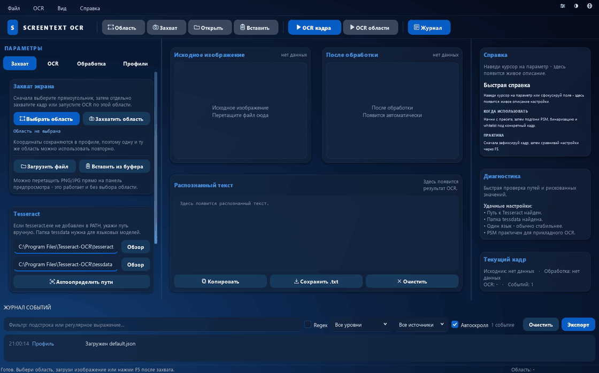
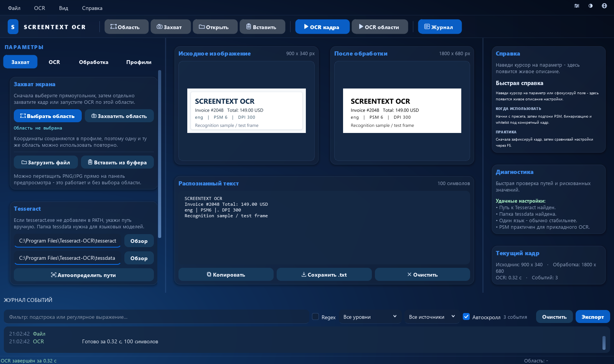
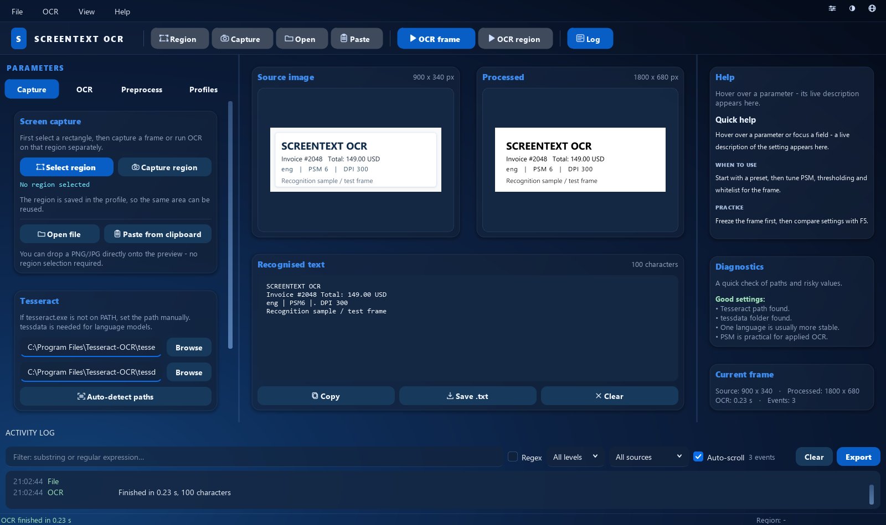
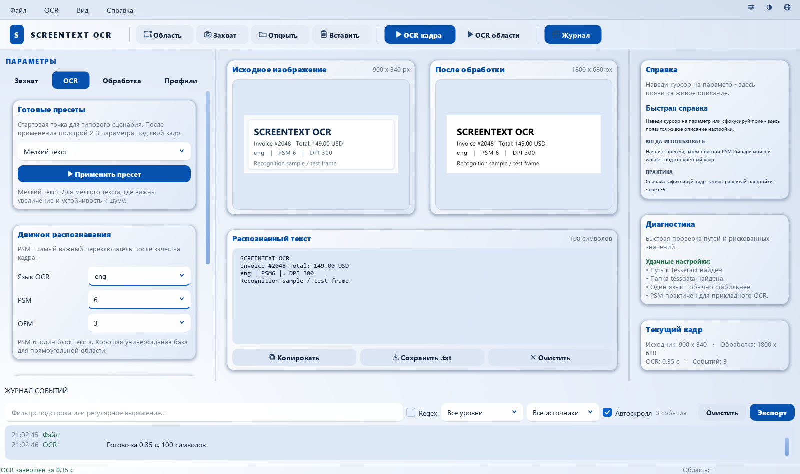

Demo
A short recording of a capture and an OCR run.

What it does
-
Screen capture
Captures a rectangle on screen or opens a PNG or JPG file. The saved region can be reused.
-
Local OCR
Uses Tesseract 5 installed on the same PC. Russian and English language data are supported.
-
Text preview
Shows the source image, the processed image and the recognized text in one window, with timing.
-
Copy or save
Copies the result to the clipboard or saves it as a .txt file. No account or API key is needed.
Screenshots
The app has a dark theme and a light theme, with a Russian and an English interface.



How it works
- Select region Choose a rectangle on screen, or open an image file.
- Capture Capture the frame. The preview shows the exact area.
- OCR Run Tesseract 5 and pick the language for the text.
- Copy Copy the text to the clipboard or save it as a .txt file.
FAQ
Does it need internet?
No. The app works offline. Tesseract and the language data are already on your PC.
Does it send data anywhere?
No. There is no telemetry, no account and no API keys. Screen captures and recognized text stay on your machine.
What do I need installed?
Windows 10 or 11 and Tesseract 5 with the language data you plan to use. The app can find Tesseract on PATH, or you can set the paths in the app.
Is it free?
Yes. ScreenText OCR is open source under the MIT license. The portable exe is in GitHub Releases.
Коротко о программе
ScreenText OCR распознаёт текст с выбранной области экрана или из файла изображения. Программа работает локально через установленный Tesseract 5 и не отправляет данные в сеть. Интерфейс поддерживает русский и английский языки, есть тёмная и светлая темы. Приложение бесплатное, распространяется по лицензии MIT, текущая версия 2.2.0.